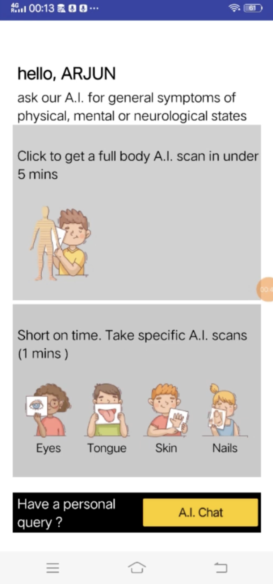
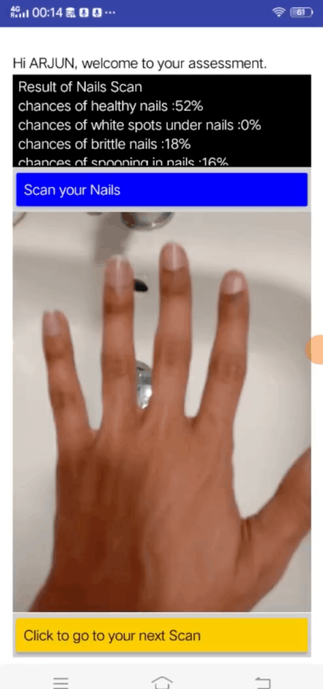
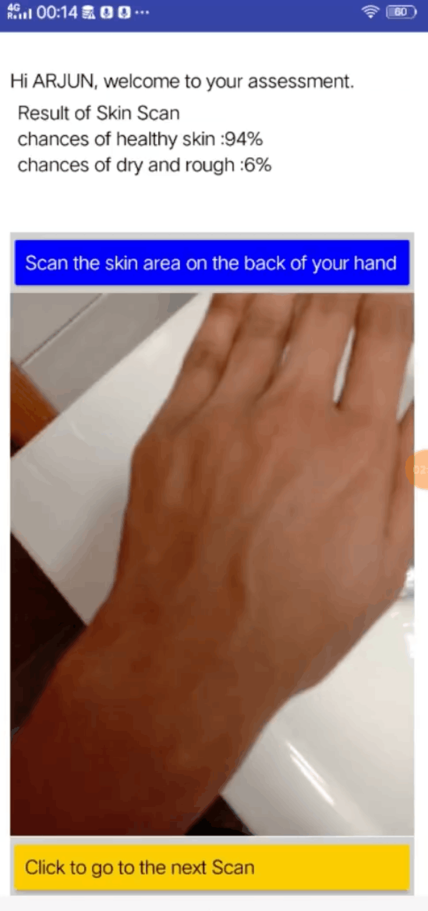
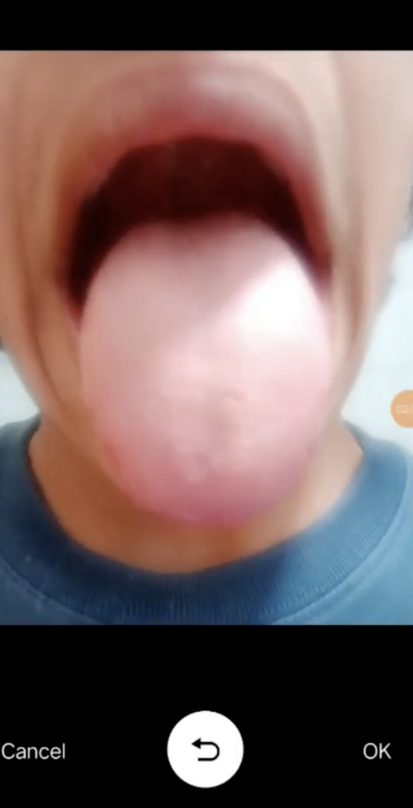
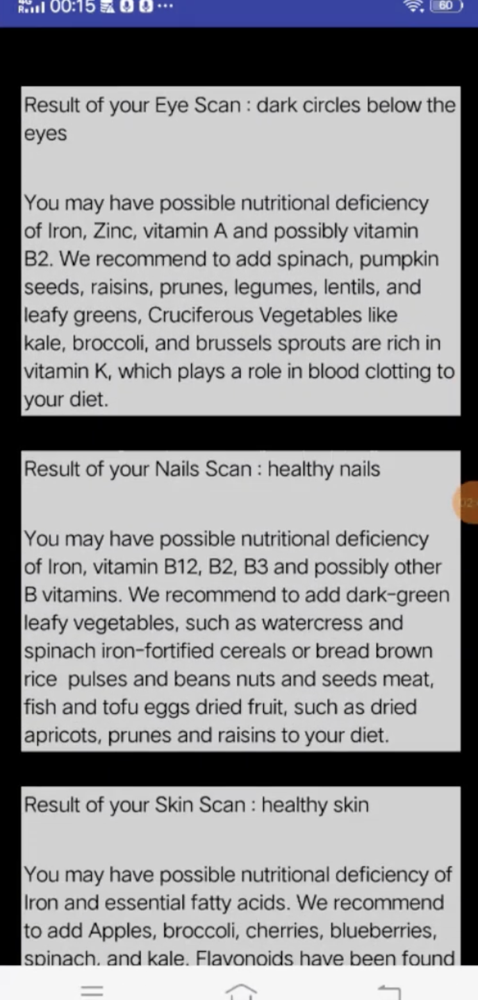
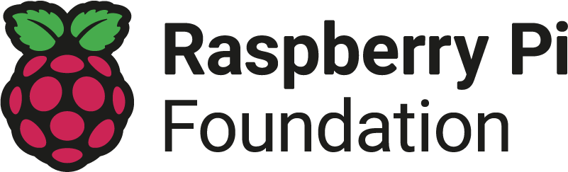
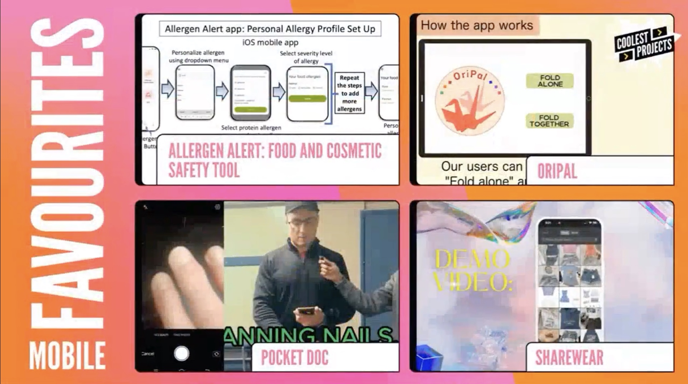
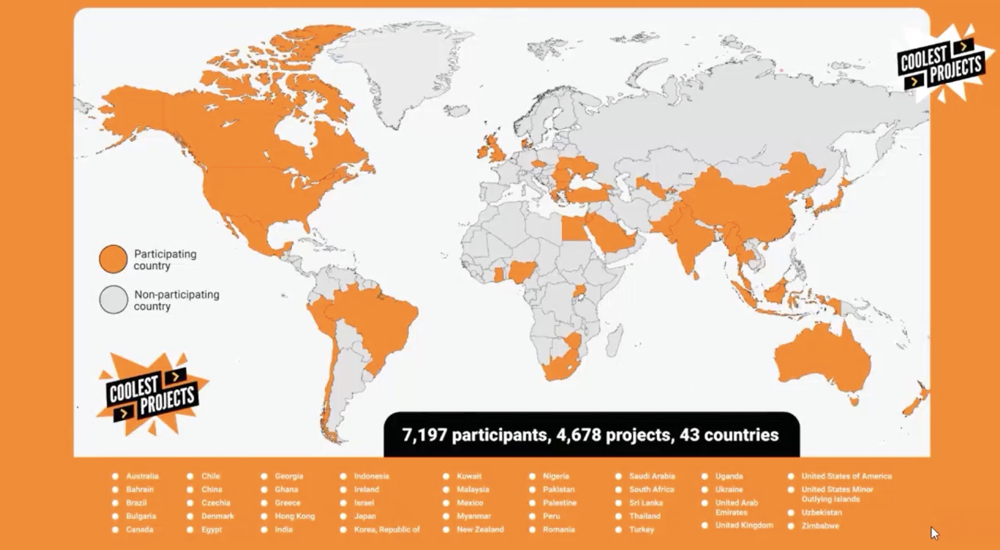

Pocket Doc.
Video
About
My inspiration
Pocket Doc was built around a simple idea: what if basic health awareness could be made more accessible through a phone camera?

Introduction
In Ireland, growing pressure on public health services has made it harder for many people to quickly access general practitioners, hospital appointments, and early health guidance. Pocket Doc was designed as a lightweight AI tool that helps users screen for possible visual indicators of nutritional deficiencies, giving them a starting point for awareness before seeking professional medical advice.
The app uses an AI image classifier to analyse visible body indicators that may be linked to common deficiencies. To build the model, I created a dataset using images and reference material from NHS and other validated medical sources, keeping the training data grounded in credible health information.
Core features





Purpose and recognition
The goal was not to replace doctors or provide a diagnosis. Instead, Pocket Doc acts as a first-step health companion: helping users notice potential warning signs earlier, understand what they might mean, and take the next step by speaking to a medical professional when needed.
Pocket Doc was recognised at Coolest Projects Global 2024, where it received the Judge's Favourite Award in the mobile app category at a global event with 7,197 participants, 4,678 projects, and 43 countries.
I created the app to deepen my knowledge of machine learning and AI while solving a problem being faced in my own community.
Recognition

- Judge's Favourite, Mobile App category — Coolest Projects Global 2024.
- Recognised among 7,197 participants and 4,678 projects representing 43 countries.

